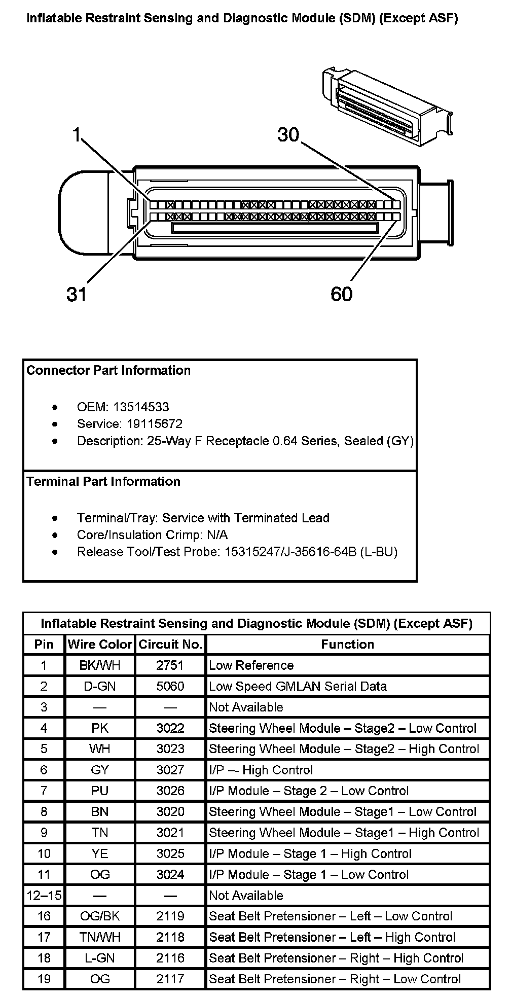
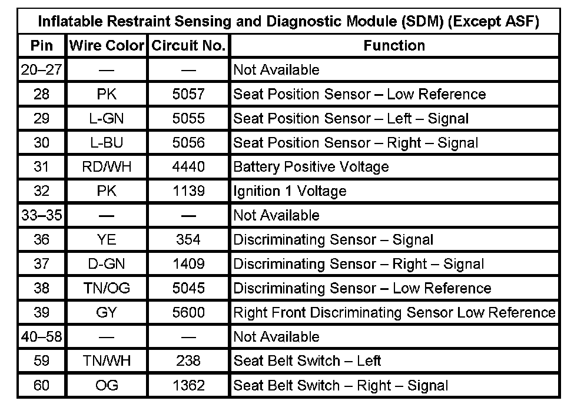
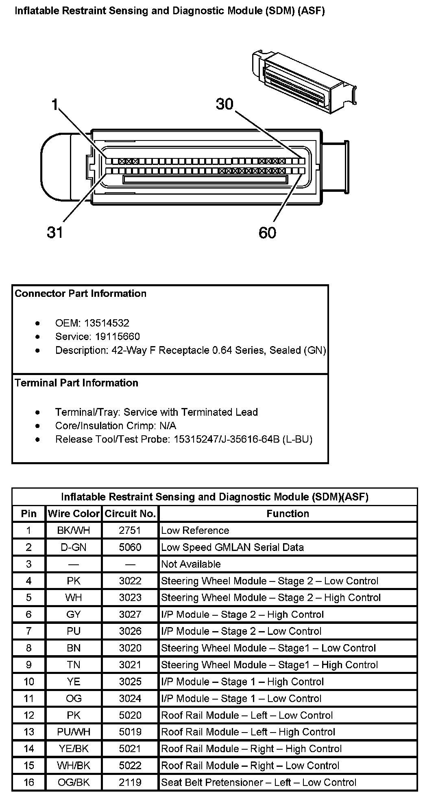
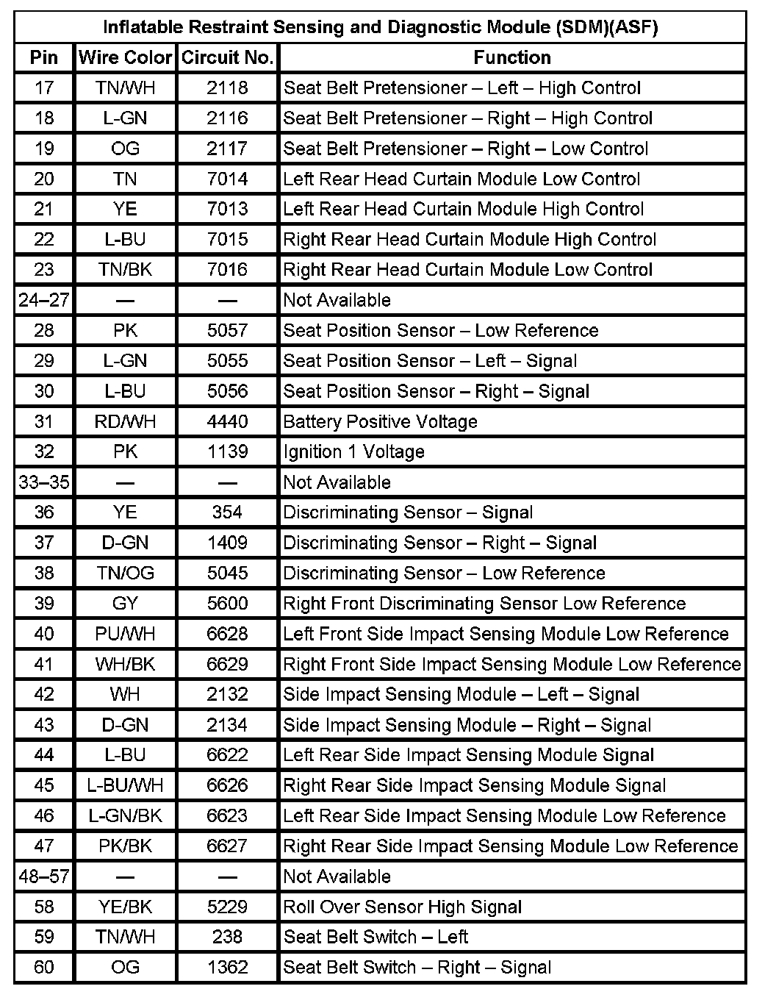

Air Bag Control Module: Diagrams
Inflatable Restraint Sensing And Diagnostic Module (SDM) (Except RPO Code ASF) (Pin 1 To 19):

Inflatable Restraint Sensing And Diagnostic Module (SDM) (Except RPO Code ASF) (Pin 20 To 60):

Inflatable Restraint Sensing And Diagnostic Module (SDM) (With RPO Code ASF) (Pin 1 To 16):

Inflatable Restraint Sensing And Diagnostic Module (SDM)(With RPO Code ASF) (Pin 17 To 60):
